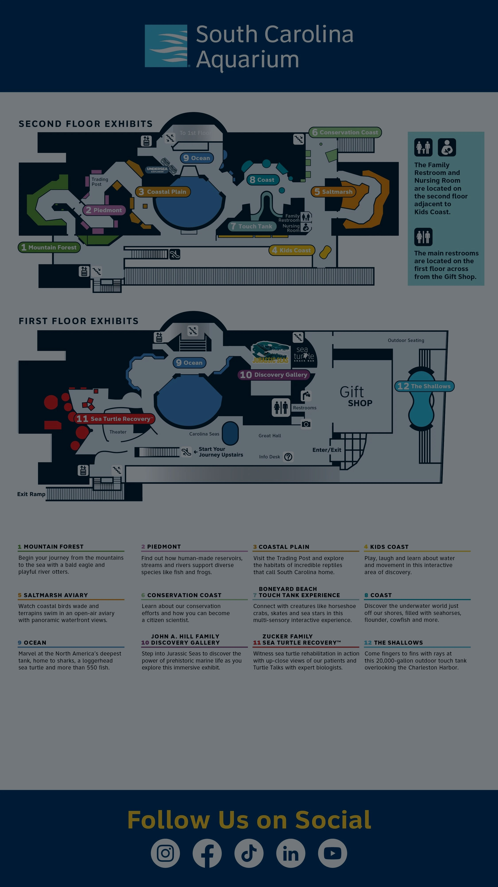

Best short route
Prioritize Mountain Forest, touch tanks, Great Ocean Tank, Jurassic Seas and Sea Turtle Care Center.
Self-guided visit companion
A clean, phone-friendly page for your South Carolina Aquarium visit with a suggested tour route, the Aquarium’s online map and nearby places to eat.
A suggested path through the Aquarium, shown one stop per row with image, title, description and approximate time.
This app includes the Aquarium’s online map image for quick reference. Use the official page for the latest version and pinch-to-zoom as needed.

Tap a card to open directions. Hours can change, so check before walking or driving over.
Prioritize Mountain Forest, touch tanks, Great Ocean Tank, Jurassic Seas and Sea Turtle Care Center.
Harbor views, otters if active, jellyfish, large tank silhouettes and turtles.
The Aquarium’s directions page points visitors to the Aquarium Garage at 24 Calhoun Street.
Keep the map open and ask staff for the easiest route if elevators or ramps are needed.